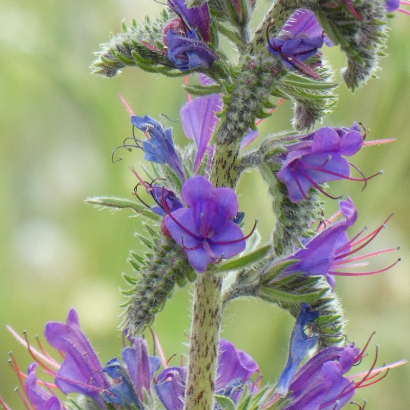

Echium vulgare
Common name
Viper's-Bugloss
Family
Boraginaceae
Family common name
Borage family
Blooms
April - October
Habitat
Meadows and footpaths. Dry, stony, nutrient-rich soils to an altitude of 2200 m.
Range Map